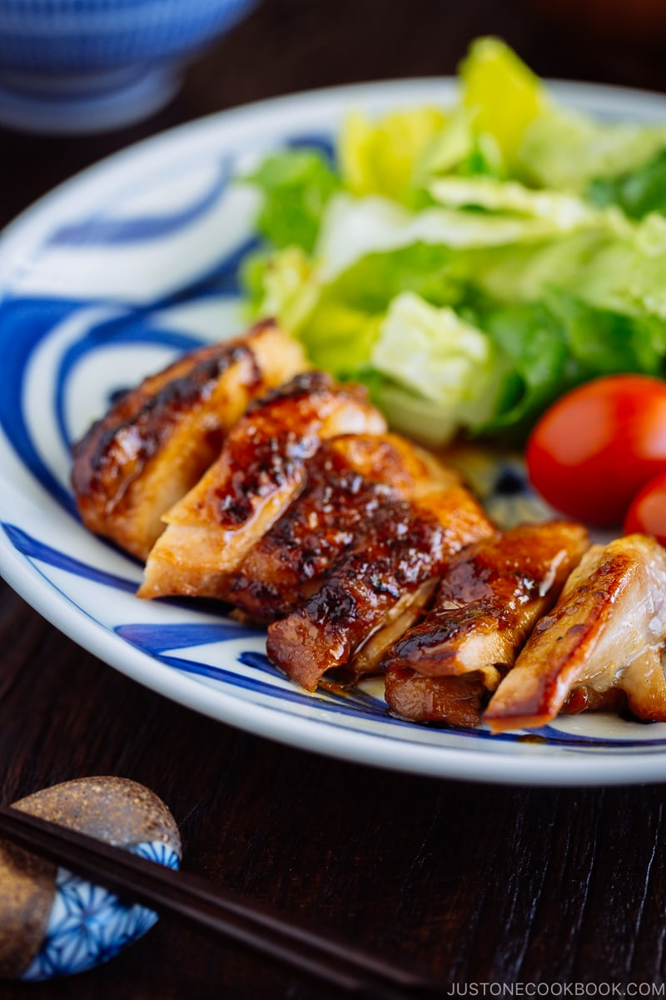

Teriyaki Chicken

Description
(From Wikipedia) Teriyaki (kanji: 照り焼き) is a cooking technique used in Japanese cuisine in which foods are broiled or grilled with a glaze of soy sauce, mirin, and sugar.
The following recipe is taken from Just One Cookbook
INGREDIENTS
- 1 knob ginger (1 inch, 2.5 cm)
- ¼ onion (1 oz, 30 g)
- 1 lb boneless, skin-on chicken thighs
- Diamond Crystal kosher salt (use half as much for table salt and two-thirds for sea salt by volume)
- freshly ground black pepper
- 1 Tbsp neutral-flavored oil (avocado, rice bran, vegetable, canola, etc.) (for step 1 of cooking the chicken)
- 2 Tbsp sake (for steaming)
- 1 tsp neutral-flavored oil (avocado, rice bran, vegetable, canola, etc.) (for step 4 of cooking the chicken)
For the Teriyaki Sauce
- 1 Tbsp sake
- 1 Tbsp mirin
- 1 Tbsp sugar
- 2 Tbsp soy sauce
- 2 Tbsp water
STEPS
To Make the Teriyaki Sauce
- In a large bowl, combine the grated ginger and grated onion, including their juices. I use this grater to grate the ginger.
- Add all the ingredients for teriyaki sauce in the bowl and mix together.
To Prepare the Chicken
- Prick both sides of the chicken with a fork so it absorbs more flavor. If the thighs are very thick on one side, flatten them to an even thickness with a meat mallet/tenderizer.
- Cut off the excess skin and fat and lightly season the chicken pieces with salt and pepper.
- Optionally, you can marinate the chicken for 30 minutes. In Japan, we don't usually marinate the chicken prior to pan-frying as the sauce can easily burn. I normally go straight to cooking the chicken without marinating, and the chicken teriyaki still has a wonderful flavor. Today, I'll show you how to marinate and cook the chicken to highlight some key points to follow when using this optional method.
To Cook the Teriyaki Chicken
- Heat a large frying pan over medium heat. When the pan is hot, add the measured oil for step 1. Remove as much of the marinade as possible from the chicken so it gets a nice sear and doesn't end up steaming in the sauce. Place the chicken skin side down, RESERVING the teriyaki marinade. Use a splatter screen if you have one (it's a pretty neat tool to prevent oil splatters especially when you cook bacon and oily foods).
- Cook the chicken for 3 minutes. When the fat renders from the skin and the skin is golden brown, flip the chicken. Add the sake and quickly cover with a lid. Steam the chicken over medium-low heat for 8 minutes.
- Open the lid and transfer the chicken to a plate. Wipe off the excess grease from the pan.
- Put the pan back on the stove over medium heat and add the measured oil for step 4. Place the chicken back in the pan, skin side down. Brown and crisp the skin for an additional minute.
- Flip the chicken so the skin side is now facing up. Pour the reserved teriyaki marinade into the pan. Cook until the sauce is reduced by about half, frequently spooning it over the chicken. Once the alcohol from the sake and mirin evaporates, you'll see the sugar start to crystallize and the sauce thicken. Turn off the heat.
- Transfer the chicken to a cutting board and slice into bite-sized pieces.
- Serve on a plate and drizzle the remaining pan sauce on top.